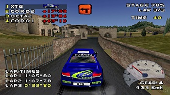
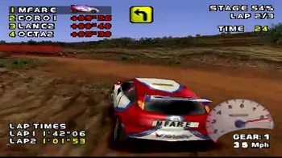
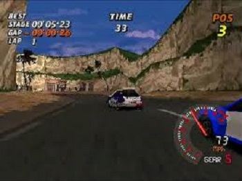
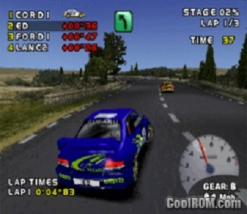
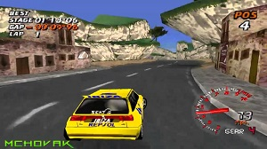

Você precisa ser fera para consegui manter seu carro na estrada neste campeonato de rally. Prepare-se para enfrentar 42 pistas emocionantes.
Need for Speed: V-Rally produzido pela Electronic Arts na época, na linha de jogos de corrida. O jogo não tem nada a ver com as versões anteriores da série Need for Speed. Inclusive, a equipe de desenvolvimento não é a mesma. Na verdade, estes produtores compraram os direitos do V-Rally, e produziram um jogo com o NFS no nome. Mas nada disso desmerece o jogo. No total existem 42 pistas diferentes para percorrer com 11 carros. O número de pistas é recorde entre os jogos de corrida. Cada trajeto possui sua própria aparência e obstaculos (areia, neve, chuva entre outros), o que torna o jogo muito divertido. Os carros também não deixam para menos. Há modelos clássicos do Rally internacional, como Subaru Impreza e Mitsubishi Lancer, entre outros carros de várias marcas.
V-Rally possui um dos melhores tratamentos gráficos para jogos de corrida na época. Tudo foi muito bem cuidado desde as paisagens até terrenos e sinalizações. As pistas são verdadeiros passeios. Um ponto fraco do jogo são os efeitos sonoros, pouco trabalhados e detalhados. O motor do carro parece o de um carrinho de autorama. A música também não ajuda, com poucos rocks (que são comuns em jogos de corridas e ajudam a dar um clima de campeonato). Outros pontos em que V-Rally peca, e muito, é nos controles. A jogabilidade é simplesmente horrível: o carro escorrega e gira muito, mas muito facil mesmo. É preciso muitas horas de treino para pegar o jeito de pilotar, e todas essas dificuldades, acabam tirando o prazer do jogo. No fim das contas, você se preocupa mais com o controle do que com a velocidade e os belos cenários. Este jogo teria tudo para ser o melhor simulador de corridas na época, mas esse grave problema com os controles não ajuda.
|  |  |
|  |  |

Assista com atenção a seguência de abertura do jogo. Quando visualizar o logo da Infogrames num fundo branco aperte rapidamente mantenha o pressionado e aperte . Surgirá na tela a palavra LOCK OFF em letras verdes. Pronto, acaba de conseguir todas as pistas para o modo Arcade e Championship. Se soltar os botões e rapidamente quando surgir a palavra LOCK OFF, será possível entrar com outros códigos secretos. Deve fazer as seguências indicadas abaixo, antes que o logo da Infogrames fique colorido. Acompanhe a seguência para cada um dos segredos.
Mantenha o L1 apertado até aparecer as palavras TIME OFF. Agora a corrida nunca mais será encerrada caso o tempo se esgote no modo Arcade.
Mantenha o botão L2 pressionado e as palavras NARROW ON surgirão na tela. Desta forma, a pista no modo Arcade ficará mais estreita.
Aperte e depois mantenha pressionado o botão R2. As palavras RESTART ON surgirão na tela, e seraá acrescentada a opção Restart quando você der Pause no jogo. Assim se, alguma coisa der errado poderá reiniciar a corrida sem perder nada.
Pressione e depois . As palavras FULL DEBUG irão aparecer na tela. Agora, dando Pause poderá acessar uma nova opção chamada Memory, que mostra dados utilizados pelos programadores para fazer o jogo.